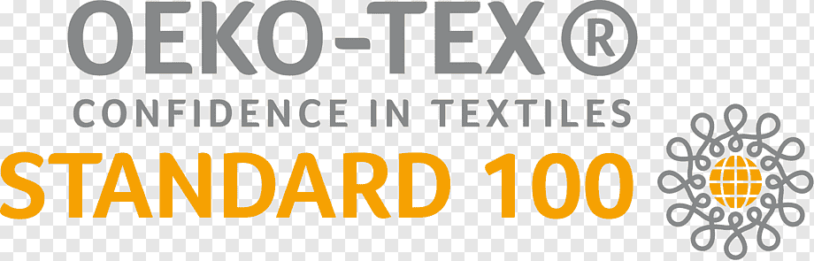
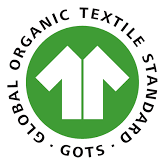
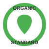
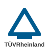

A LEGACY OF QUALITY
Experienced Textile Processing.
Dependable Fabric Supply.
Based in Erode, Tamil Nadu, we bring 30+ years of technical expertise to solid-dyed and printed fabric supply for B2B exporters worldwide.
0+
Years Experience
0M+
Meters Processed Annually
0%
Export Quality Assured
Manufacturing to Global Standards




Greige-to-Finished Mastery
Hover to explore our core processing capabilities aligned exactly to your technical specifications.

Solid-Dyed
Fabrics

Precision
Printing

Technical
Finishing
Ready to Process Your Next Batch?
Looking for a reliable textile processing supplier? Share your specifications for a technical assessment.